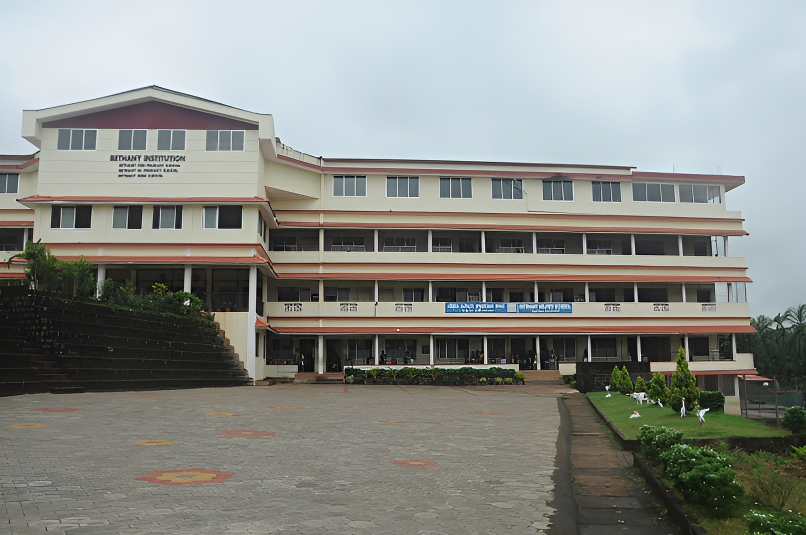

BETHANY ENGLISH MEDIUM SCHOOL,DARBE
Due to the untiring effort of the Management and by the co-operation of Educational authorities, Bethany High School was established on 23 March 2009 with English as the Medium of Instruction. The Number of Students got admitted to Std VIII were 50 with 26 boys and 24 girls. Sr Emerita was the first Headmistress and Sr Doris the first Correspondent. Sr Sybil BS served as the Correspondent from 2014-16. Currently Sr. Marie-Lyta is the Correspondent. The newly built School is spacious with a big playground. It is indeed an attraction to the students of the locality. The public have a high regard on this institution. Clubs such as English, Science, Social Science, Eco and Literary enthuse the students to be active and creative. They have Scouts and Guides unit in order to inculcate discipline and love for the nation. Celebrations of national and religious festivals motivate them to create a humane and just society.
